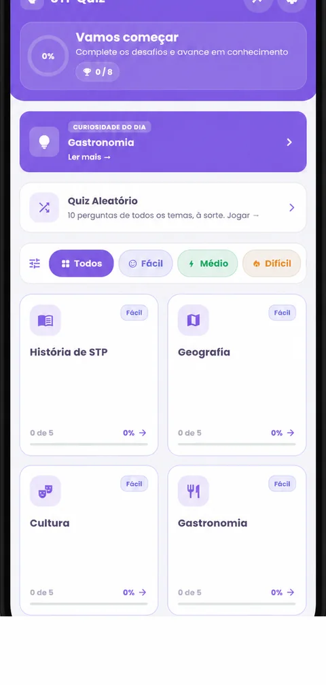
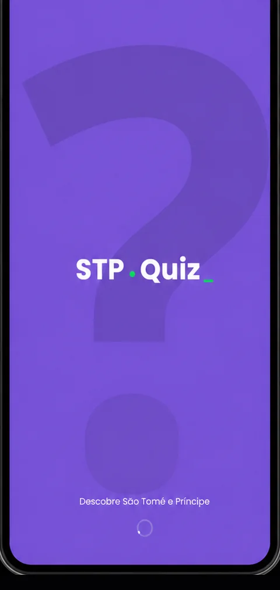
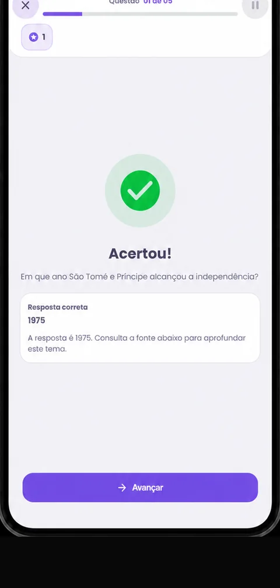
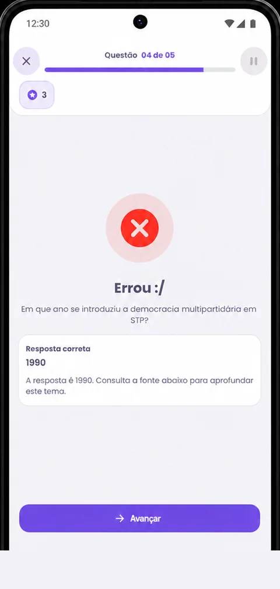

DescobreSTP Quiz
Quiz educativo sobre a história, geografia, cultura, gastronomia, línguas, música, desporto e moeda de São Tomé e Príncipe. 160 perguntas com explicação e fonte, 4 níveis, 3 idiomas. Grátis, sem anúncios e funciona offline.

Porquê a
STP Quiz
Privacidade primeiro
Sem contas, sem analytics, sem publicidade. O progresso fica só no teu dispositivo e nada é enviado para servidores externos.
Totalmente gratuita
Sem subscrições nem compras dentro da app. Todos os temas e níveis estão desbloqueados desde o primeiro toque.
Funciona offline
Todo o conteúdo é local. Só precisas de internet para instalar a aplicação a partir da Google Play.
Conteúdo com fontes
Cada pergunta traz explicação e fonte específica, em português, inglês e francês, para aprenderes mesmo quando erras.
Funcionalidades
da aplicação
Curiosidade do Dia
Uma nova curiosidade sobre São Tomé e Príncipe todos os dias na página inicial, com notificação opcional às 9h (hora local) e partilha num toque.
Mecânicas por nível
Dica 50/50, respostas embaralhadas, cronómetro, vidas e multiplicador de pontos de ×1 a ×4. Cada nível tem as suas regras.
Estatísticas e revisão
Acompanha jogos, pontos e precisão por tema e por nível. No fim de cada quiz revê todas as respostas com explicação e fonte.
Quiz aleatório e personalização
Mistura os temas que quiseres com as regras do nível escolhido. Tema claro, escuro ou do sistema e cores primária e secundária à tua medida.
Oito temas, uma ilha cheia de história
Cada tema tem 20 perguntas distribuídas pelos quatro níveis, com página educativa dedicada.
História de STP
Da chegada portuguesa à independência em 1975.
Geografia
Duas ilhas vulcânicas sobre o Equador, no Golfo da Guiné.
Cultura
Tchiloli, Auto de Floripes, festas e literatura.
Gastronomia
Calulu, arroz de polvo, omelete santomense e doçaria.
Línguas
Português, Forro, Angolar, Lung'Ie e Cabo-verdiano.
Música
Socopé, Déxa, Puita, Ússua e novas gerações.
Desporto
Futebol, atletismo e a presença do país nos Jogos Olímpicos.
Moeda
Da dobra à nova dobra (STN) e à paridade fixa com o euro.
Quatro níveis, quatro formas de jogar
Fácil
- 1 dica 50/50 por quiz
- Respostas embaralhadas
- Sem cronómetro nem vidas
Médio
- Perguntas e respostas embaralhadas
- Sem cronómetro nem vidas
- Sem dicas
Difícil
- 20 segundos por pergunta
- 3 vidas
- Tudo embaralhado
Perito
- 10 segundos por pergunta
- 1 vida: um erro e acabou
- Tudo embaralhado
Vê como funciona
Desliza para o lado para ver todos os ecrãs →



Onboarding em três passos, página inicial com Curiosidade do Dia e progresso global, quizzes por tema e nível com feedback imediato, e um ecrã de resultado com pontos, precisão e revisão de respostas.
Dezanove dados-chave sobre o país
A app inclui uma página de referência com 19 factos verificados. Alguns exemplos:
E ainda: designação oficial, língua, população, fuso horário, forma de governo, localização, composição, clima, lado de condução, estreia olímpica e mais, todos com fonte.
Novidades
- Quatro níveis e 20 perguntas em cada um dos oito temas, com alternativas embaralhadas.
- Nova página de revisão de respostas, alinhada com Estatísticas e Definições.
- Curiosidade do Dia às 9h locais e quiz aleatório com as mecânicas do nível escolhido.
- Interface a toda a largura no Android 15 e download mais pequeno.
Perguntas frequentes
Sim. A STP Quiz é totalmente gratuita e não tem anúncios nem compras dentro da aplicação. Tudo está disponível desde o primeiro arranque.
Não. O conteúdo dos quizzes é local e funciona sem ligação à internet após a primeira abertura. Só precisas de internet para o download na Google Play.
Apenas no teu dispositivo, através do mecanismo de preferências locais do Android. Nada é enviado para servidores externos.
Não. A aplicação não recolhe dados pessoais identificáveis, não tem contas nem analytics. Vê os detalhes na Política de Privacidade.
Português, inglês e francês (ou a língua do sistema, por defeito). A escolha pode ser alterada dentro da app, em Definições.
Dentro da app vai a Definições > Limpar Cache. A ação remove todos os resultados guardados. Desinstalar a aplicação tem o mesmo efeito.
Sim! Envia para vagneripg@gmail.com, sempre que possível com a fonte, para a informação poder ser validada.
Descarrega já
Grátis, sem anúncios e sem dados pessoais. Apenas conhecimento sobre um dos países mais bonitos do Golfo da Guiné.